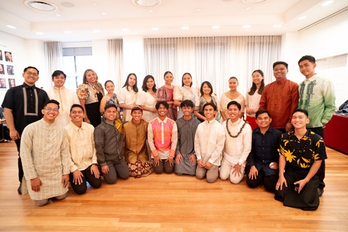

My NYC Tour
Carnegie Hall Experience
A Night at Carnegie Hall in New York City is one of the best experiences I have had in my life. Carnegie Hall is the place that every musician dreams to perform at, and I am so blessed to be here and to represent the university, my country, and to sing for those people who experienced tragedy.

Filipinos in the Choir It is such a privilege to be a part of this large choir group, especially to represent our country and share our requiem. One of the pieces we sang was for the people of Tacloban City, Philippines.
